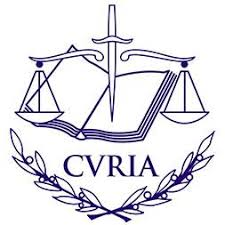
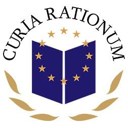

Introdução
Os tribunais europeus desempenham um papel essencial na aplicação das leis da União Europeia e na fiscalização da gestão financeira das suas instituições. Dois dos principais órgãos são o Tribunal de Justiça da União Europeia e o Tribunal de Contas Europeu.
Tribunal de Justiça da União Europeia (TJUE)
O Tribunal de Justiça da União Europeia garante que a legislação da UE é interpretada e aplicada da mesma forma em todos os Estados-Membros, assegurando que os países e as instituições da UE cumpram o direito europeu.
- Sede: Luxemburgo
- Fundado: 10 de setembro de 1952.
Perguntas sobre o Tribunal de Justiça da União Europeia
Tribunal de Contas Europeu (TCE)
O Tribunal de Contas Europeu é responsável por auditar as finanças da União Europeia, garantindo que os recursos são utilizados de forma correta, eficiente e transparente.
- Sede: Luxemburgo
- Fundado 22 de julho de 1975
Perguntas sobre o tribunal de Contas Europeu
Contactos
Para mais informações sobre as instituições da União Europeia, podes visitar o portal oficial da UE:
Portal da União Europeia